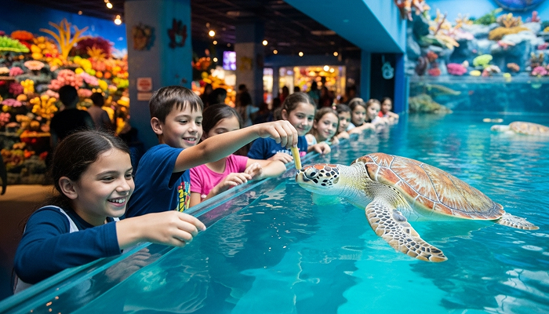
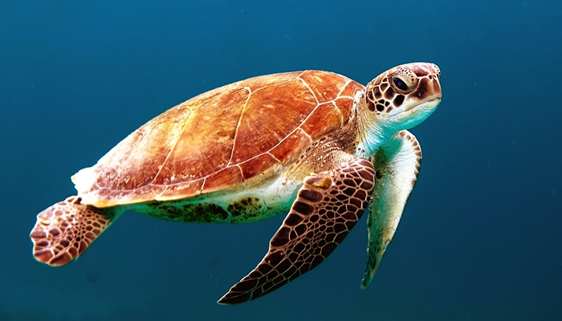

먹이주기 체험
직접 먹이를 주며, 바다 생명과 가장 가까워지는 순간
👤참여인원
최대 12인
⏱️소요시간
40분~50분
🕒운영시간
오전 9시 ~ 오후 3시
먹이주기 체험
전문 사육사의 안내에 따라 해양 생물의 식사 준비부터 먹이를 주는 순간까지 함께합니다. 바다 생명과 교감하는 이 시간은 아이에게는 잊지 못할 경험이 되고, 부모에게는 교육과 재미를 함께 전하는 기회입니다.
체험은 안전을 고려한 환경에서 소규모로 진행되어, 아이 한 명 한 명이 충분히 집중하며 참여할 수 있습니다. 전문가의 설명과 질문을 나누는 시간을 통해, 관람으로는 알기 어려웠던 바다 생물의 이야기가 오래 기억에 남습니다.


먹이주기 체험 상세
- 요금 8,000원 (단독 체험 활동 이용 시) / 32,000원 (전체 체험활동 이용 가능)
- 진행요원 전문 아쿠아리스트 2인
- 운영시간 09:00~15:50 홀수 시간마다 진행 (9시, 11시, 13시, 15시)
- 예약방법 온라인 예약 (체험 시작 최소 1시간 전 예약 필수)